Three ingestion architectures, one Elasticsearch, the same load and the same failures applied to each. Every number below is produced by code in this repository and can be reproduced with three commands.
Loss is counted exactly, not sampled: every event carries a per-source sequence number, and the verifier walks the entire index to find which ones are missing.
| Scenario | Configuration | Result |
|---|---|---|
| Elasticsearch unavailable 139 s | Kafka buffer | 0 lost (0.00%) |
| Elasticsearch unavailable 139 s | Direct, persisted queue | 0 lost (0.00%) |
| Elasticsearch unavailable 139 s | Direct, in-memory queue | 750,364 lost (50.02%) |
| Collector restarted 99-104 s | Kafka buffer | 0 lost (0.00%) |
| Collector restarted 99-104 s | Direct, persisted queue | 311,830 lost (20.79%) |
| Collector restarted 99-104 s | Direct, in-memory queue | 300,294 lost (20.02%) |
| Burst to 150,000/s | Kafka buffer | 0 lost (0.00%) |
| Burst to 150,000/s | Direct, persisted queue | 3,131,529 lost (44.23%) |
| Burst to 150,000/s | Direct, in-memory queue | 1,644,121 lost (23.22%) |
| Latency at steady load | Kafka buffer | p50 100 ms, p99 212 ms |
| Latency at steady load | Direct, persisted queue | p50 18 ms, p99 33 ms |
| Latency at steady load | Direct, in-memory queue | p50 99 ms, p99 201 ms |
| One of three Kafka brokers killed | Kafka buffer | 0 lost, producer stalled 8 s |
| Consumers scaled 1 → 4 | Kafka buffer | 2.38× throughput |
| 20% of events redelivered | Fingerprint document _id | 89,642 duplicates removed, index 2.0% larger |
| Compression into Kafka | zstd vs none | 93% fewer bytes buffered (13.8×) |
Every later scenario runs below this line. If a failure test ran at a rate an arm could not sustain even while healthy, that arm would lose events for reasons unrelated to the failure, and the comparison would be worthless. The slowest arm here handles 68,519 events/s, so the failure scenarios run at 5,000/s — roughly 14× of headroom for all three.
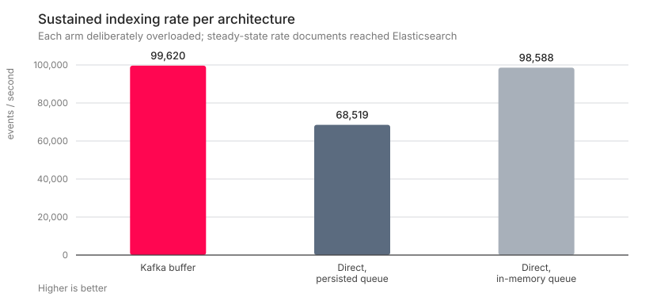
| Architecture | Indexed | Generator emitted | Dropped at source | Limited by |
|---|---|---|---|---|
| Kafka buffer | 99,620/s | 149,999/s | 0 | pipeline-limited |
| Direct, persisted queue | 68,519/s | 150,000/s | 7,167,285 | pipeline-limited |
| Direct, in-memory queue | 98,588/s | 149,998/s | 4,397,245 | pipeline-limited |
The destination is stopped for two minutes while the load continues, because in real life it does. The question is not whether the pipeline notices — all three do — but where the events wait, and whether they are all still there when it comes back.
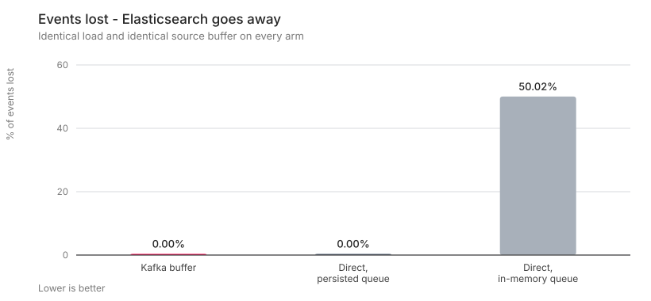
| Architecture | Produced | Indexed | Lost | Loss | Dropped at source | Lost after acceptance |
|---|---|---|---|---|---|---|
| Kafka buffer | 1,500,000 | 1,500,000 | 0 | 0.00% | 0 | 0 |
| Direct, persisted queue | 1,500,000 | 1,500,000 | 0 | 0.00% | 0 | 0 |
| Direct, in-memory queue | 1,500,000 | 749,636 | 750,364 | 50.02% | 750,373 | 0 |
“Dropped at source” are events the source could not hand over because its buffer was full. “Lost after acceptance” are events the pipeline took and never delivered — a different, worse kind of failure.
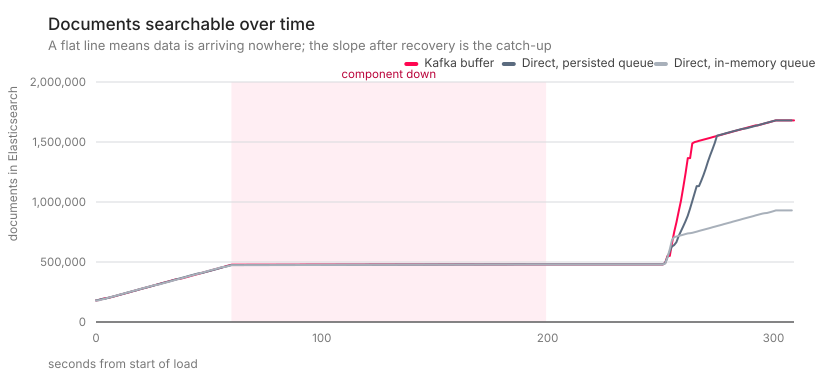
This time the component that the sources actually talk to is taken away. With a broker in front, Logstash is only a consumer: stopping it stops consumption and the topic grows. Without one, Logstash is the endpoint, and while it is down the sources have nowhere to send. A persisted queue cannot help here, because a queue on a node that is not running accepts nothing.
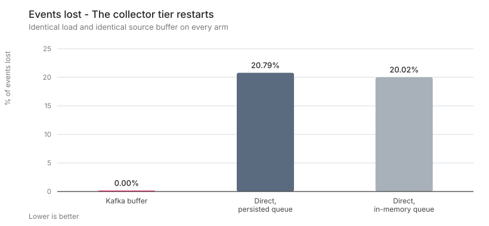
| Architecture | Produced | Indexed | Lost | Loss | Dropped at source | Lost after acceptance |
|---|---|---|---|---|---|---|
| Kafka buffer | 1,500,000 | 1,500,000 | 0 | 0.00% | 0 | 0 |
| Direct, persisted queue | 1,499,999 | 1,188,169 | 311,830 | 20.79% | 311,830 | 0 |
| Direct, in-memory queue | 1,500,000 | 1,199,706 | 300,294 | 20.02% | 300,295 | 0 |
“Dropped at source” are events the source could not hand over because its buffer was full. “Lost after acceptance” are events the pipeline took and never delivered — a different, worse kind of failure.
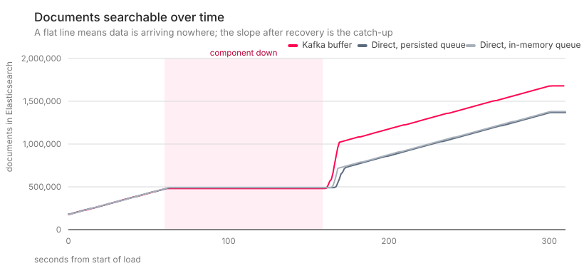
Adding a broker adds something that can fail, and that objection deserves a measurement rather than a reassurance. One of three brokers is killed outright mid-ingest, with acks=all and idempotent producers. The cost is a brief producer stall while partition leadership moves.
| Configuration | Produced | Indexed | Lost | Broker down | Producer stalled |
|---|---|---|---|---|---|
| Replication factor 3, min.insync.replicas 2 | 1,200,000 | 1,200,000 | 0 | 97 s | 8 s |
Nothing is broken here. Everything is running and healthy; there is simply more data arriving for two minutes than the pipeline can index. What is being compared is not who absorbs it instantly — nobody does — but where the excess waits, and whether it is still there afterwards.
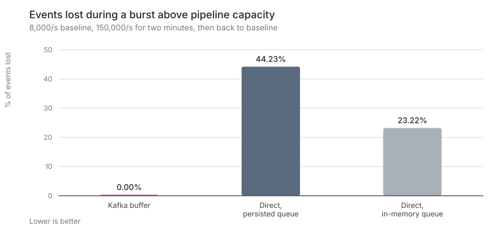
| Architecture | Produced | Indexed | Lost | Loss | Peak Kafka lag | p99 latency |
|---|---|---|---|---|---|---|
| Kafka buffer | 7,080,000 | 7,080,000 | 0 | 0.00% | 2,061,595 | 21,986 ms |
| Direct, persisted queue | 7,079,999 | 3,948,470 | 3,131,529 | 44.23% | 0 | 3,667 ms |
| Direct, in-memory queue | 7,080,000 | 5,435,879 | 1,644,121 | 23.22% | 0 | 2,429 ms |
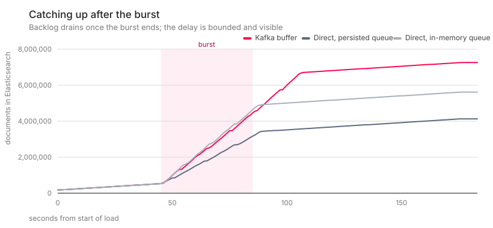
A broker between the source and Logstash is a hop that was not there before, and a hop costs time. At a load well below capacity the median event takes 100 ms through Kafka: +82 ms against direct, persisted queue and +1 ms against direct, in-memory queue. The persisted-queue arm being the fastest here is not a typo — it acknowledges to disk and reads back in large contiguous chunks. Time-to-indexed and time-to-searchable are reported separately, because the refresh interval sits between them and conflating the two is the usual way an end-to-end latency claim ends up wrong.
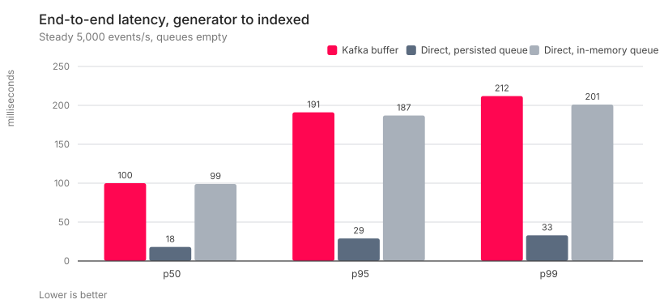
| Architecture | p50 | p95 | p99 | max | Median time to searchable |
|---|---|---|---|---|---|
| Kafka buffer | 100 ms | 191 ms | 212 ms | 268 ms | 770 ms |
| Direct, persisted queue | 18 ms | 29 ms | 33 ms | 103 ms | 837 ms |
| Direct, in-memory queue | 99 ms | 187 ms | 201 ms | 238 ms | 886 ms |
Time to searchable includes the 1 second index refresh interval, which is a property of Elasticsearch rather than of the transport.
The architecture claims capacity is added by adding partitions and consumers. A fixed backlog is drained by 1, 2 and 4 consumers in turn. Elasticsearch is replaced by a counting sink on purpose: with Elasticsearch on the end, every consumer count would converge on Elasticsearch's indexing rate and the chart would be about Elasticsearch instead.
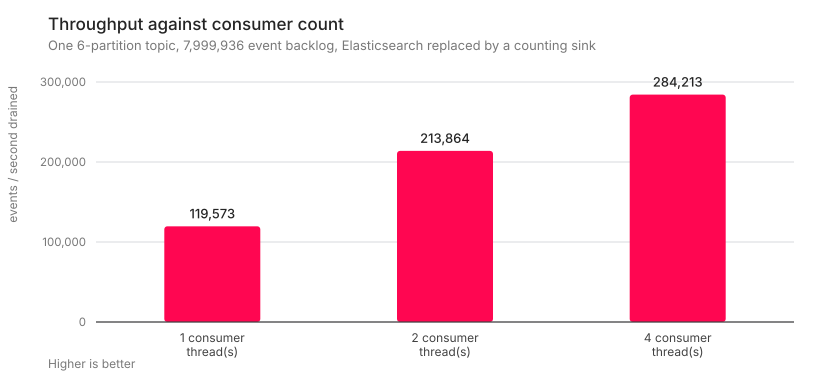
| Consumer threads | Events drained | Time | Throughput | Speed-up vs 1 |
|---|---|---|---|---|
| 1 | 7,999,936 | 66.9 s | 119,573/s | 1.0× |
| 2 | 7,999,936 | 37.4 s | 213,864/s | 1.79× |
| 4 | 7,999,936 | 28.1 s | 284,213/s | 2.38× |
Kafka's idempotent producer removes duplicates created by its own retries, but it cannot remove a duplicate the source genuinely sent twice: to Kafka those are two different produce calls carrying identical content. Removing them is a pipeline job, and a content fingerprint used as the document _id does it — a redelivered event overwrites itself instead of being stored again.
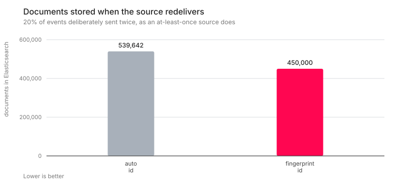
| Mode | Unique events | Sent on the wire | Documents stored | Duplicate documents | Index size |
|---|---|---|---|---|---|
| auto-id | 450,000 | 539,642 | 539,642 | 89,642 | 150.4 MB |
| fingerprint-id | 450,000 | 539,642 | 450,000 | 0 | 153.5 MB |
89,642 duplicate documents removed — but the index is 2.0% larger, not smaller. An explicit fingerprint _id costs more to store than the ids Elasticsearch generates itself, which at this duplication rate outweighs holding 17% fewer documents. Deduplicate for correctness, not for the storage bill.
Two independent measurements on the same data: what compression saves on the way into the buffer, and what it saves once the data is at rest in Elasticsearch. A Kafka topic stores exactly what was sent, so the topic size on disk is both the network cost and the buffer's storage cost.
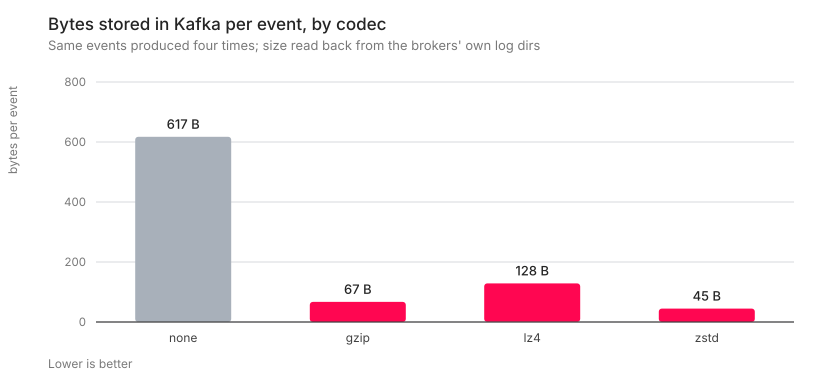
| Codec | Events | Topic on disk | Per event | Ratio vs uncompressed | Produce rate |
|---|---|---|---|---|---|
| none | 7,499,896 | 4,629.3 MB | 617 B | — | 241,498/s |
| gzip | 7,470,653 | 501.1 MB | 67 B | 9.2× | 224,490/s |
| lz4 | 7,499,974 | 963.5 MB | 128 B | 4.8× | 245,361/s |
| zstd | 7,499,906 | 335.6 MB | 45 B | 13.8× | 246,056/s |
Ratios are against the measured none run, so Kafka's own record overhead is on both sides of the comparison. The filler text in these events is drawn from a small vocabulary and compresses better than real log data, so treat the ordering of the codecs as the transferable result rather than the multiples.
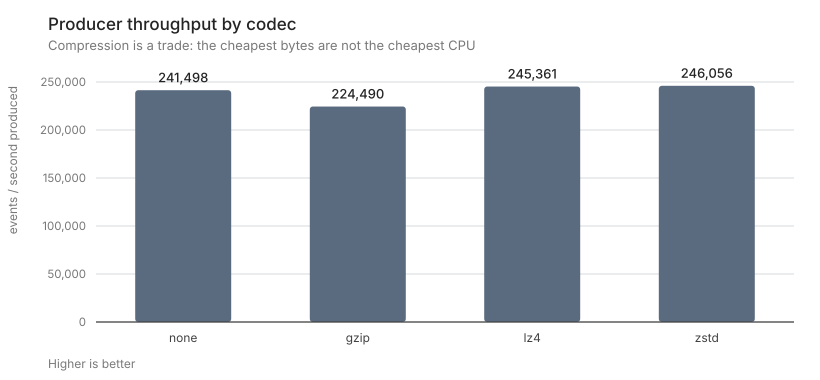
| Elasticsearch codec | Documents | Primary store | Per document |
|---|---|---|---|
| default | 599,998 | 171.3 MB | 286 B |
| best_compression | 599,998 | 97.7 MB | 163 B |
Both indices force-merged to a single segment before measuring, so segment count does not confuse the comparison. best_compression saves 42.9% here.
A benchmark that only lists its strengths is marketing. These are the limits of this one.